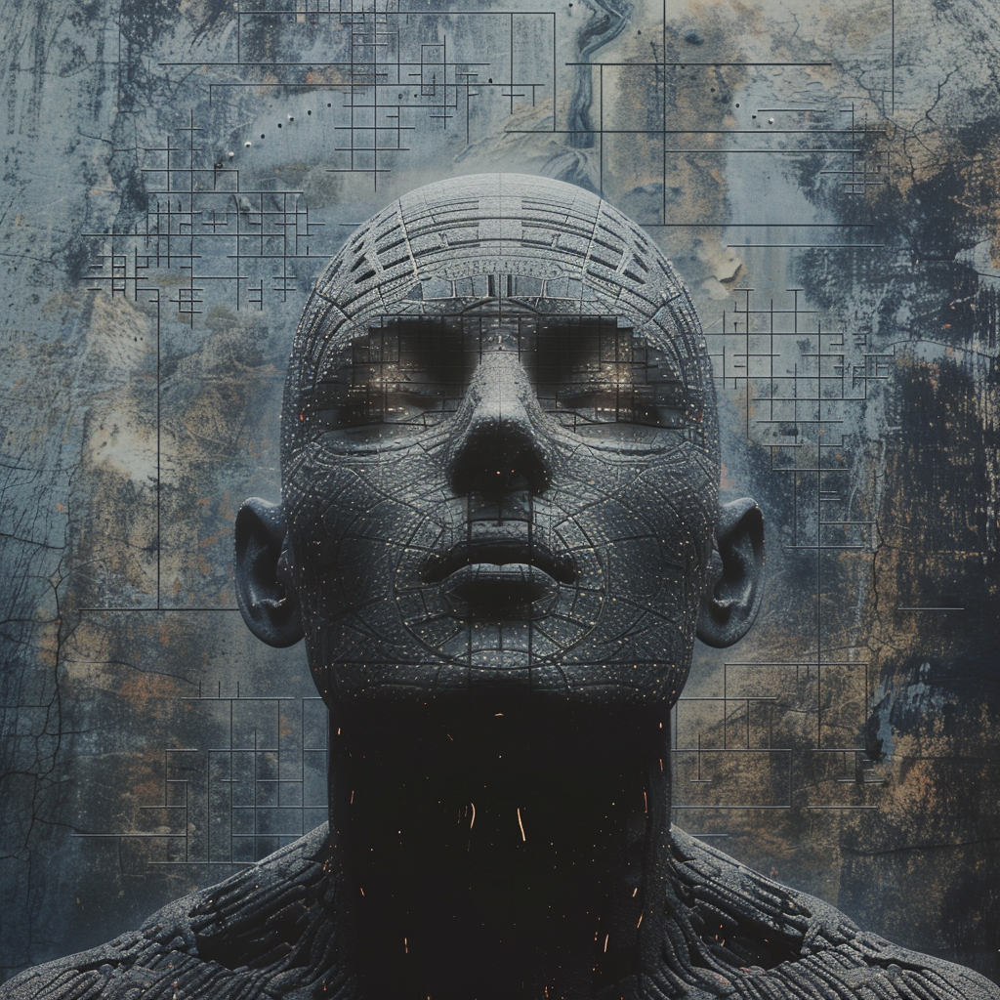

My Story
I started painting at the age of 9, inspired by the colors of nature and the emotions of people around me. What began as a simple passion for sketching grew into a lifelong journey of exploring emotions, cultures, and stories through art.
Over the years, I have experimented with different mediums including watercolor, acrylics, and mixed media. My current work focuses on abstract forms and textures that evoke emotional connections with the viewer.
My mission is to inspire others to slow down, observe deeply, and create more than they consume. Every brushstroke tells a story of patience, peace, and connection.
My Art Philosophy
Emotion
Art is emotion made visible every piece reflects human feeling, joy, and vulnerability.
Balance
True beauty lies in harmony. My work balances texture, tone, and simplicity to create calmness.
Meaning
I believe art must speak truth, not only to the eye but to the heart of the viewer.
Achievements & Exhibitions
- Winner: Global Art Vision Award 2024
- Artist: Modern Perspectives Exhibition, London
- “Colors of Silence” showcased at the Art Basel 2023
- Published in “Contemporary Artists of the 21st Century”